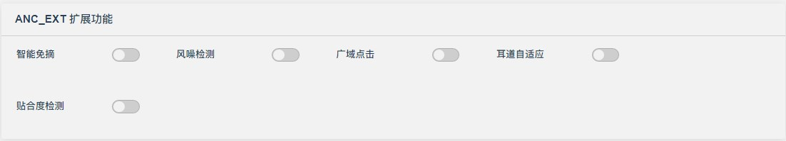
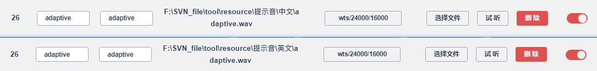

12.4.2. ANC扩展功能说明

12.4.2.1. 耳道自适应
12.4.2.1.1. 需求简介
简介：ANC降噪效果与耳机佩戴松紧度，以及用户的耳道差异息息相关；耳道自适应技术，通过麦克风收集用户耳道特性和佩戴情况的声学特征信息，自适应调整降噪参数，以提供更加舒适和个性化的降噪体验；
优势：补全不同人耳道的佩戴差异
关键词：（操作）自适应、（输入）耳道/佩戴信息、（输出）调滤波器/增益。
12.4.2.1.2. 软件配置
12.4.2.1.2.1. 基础配置
提示音配置：配置如下图，自适应需要特殊的提示音，会提供默认提示音
Adaptive ANC Tone1/2/3，需要质量比较好的提示音格式，如MTY/SBC等，如需自定义提示音，可将提示音发给原厂检查是否满足要求： 
每次切降噪模式，都触发耳道自适应，配置以下宏定义即可
#define ANC_EAR_ADAPTIVE_EVERY_TIME 1 /*每次切ANC_ON都进行自适应*/
自适应参数配置及调试方法：参考《JL耳道自适应调试指南》，导出anc_ext.bin下载到小机
anc_ext.bin 文件路径：.\SDK\cpu\br28\tools\anc_ext.bin
12.4.2.1.3. API定义
/*自适应模式-重新检测
* param: tws_sync_en 1 TWS同步自适应，支持TWS降噪平衡，需左右耳一起调用此接口
* 0 单耳自适应, 不支持TWS降噪平衡，可TWS状态下单耳自适应
*/
int audio_anc_mode_ear_adaptive(u8 tws_sync_en);
/*
强制中断自适应
param: default_flag 1 退出后恢复默认ANC效果； 0 退出后保持ANC_OFF(避免与下一个切模式流程冲突)
*/
void anc_ear_adaptive_forced_exit(u8 default_flag);
/*
自适应/普通参数切换（只切换参数）
param: mode 0 使用普通参数; 1 使用自适应参数
tone_play 0 不播放提示音；1 播放提示音
update_flag 0 不更新效果； 1 即时更新效果
*/
int audio_anc_coeff_adaptive_set(u32 mode, u8 tone_play);
/*ANC滤波器模式循环切换*/
int audio_anc_coeff_adaptive_switch();
/*当前ANC滤波器模式获取 0:普通参数 1:自适应参数*/
int audio_anc_coeff_mode_get(void);
12.4.2.1.4. 使用demo
//切换耳道自适应滤波器，更新效果
audio_anc_coeff_adaptive_set(1,0); //切换自适应滤波器
audio_anc_param_reset(1); //（可选）复位ANC，更新参数效果；需在ANC模式下
//切换默认滤波器，更新效果
audio_anc_coeff_adaptive_set(0,0); //切换默认滤波器
audio_anc_param_reset(1); //（可选）复位ANC，更新参数效果；需在ANC模式下
12.4.2.1.5. FAQ
耳道自适应场景互斥问题
前置条件：ANC模式下支持进入耳道自适应； 播歌：会打断背景音乐，等自适应完成之后再继续播放 通话：不支持耳道自适应； 其他功能互斥：智能免摘/贴合度检测/场景自适应等功能，SDK 默认会关闭，等自适应完成再打开；耳道自适应结束会使用自适应参数，并保存到vm，后续切降噪模式都会使用自适应参数，如果需要恢复默认ANC参数则调用
audio_anc_coeff_adaptive_set接口设置
12.4.2.1.6. CPU差异
特性 |
700N |
701N |
708N |
|---|---|---|---|
耳道自适应 |
× |
√ |
√ |